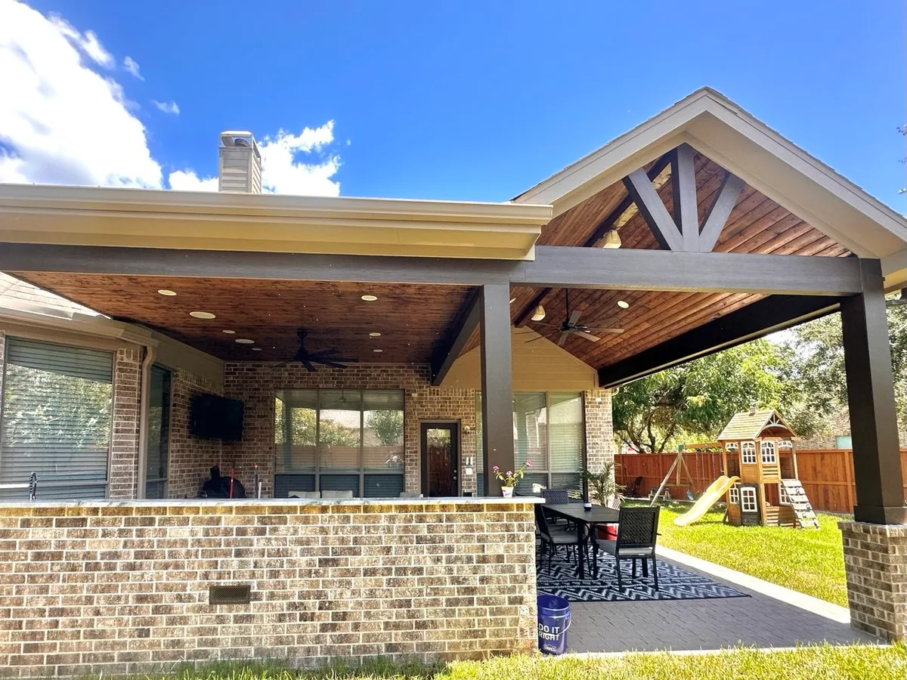
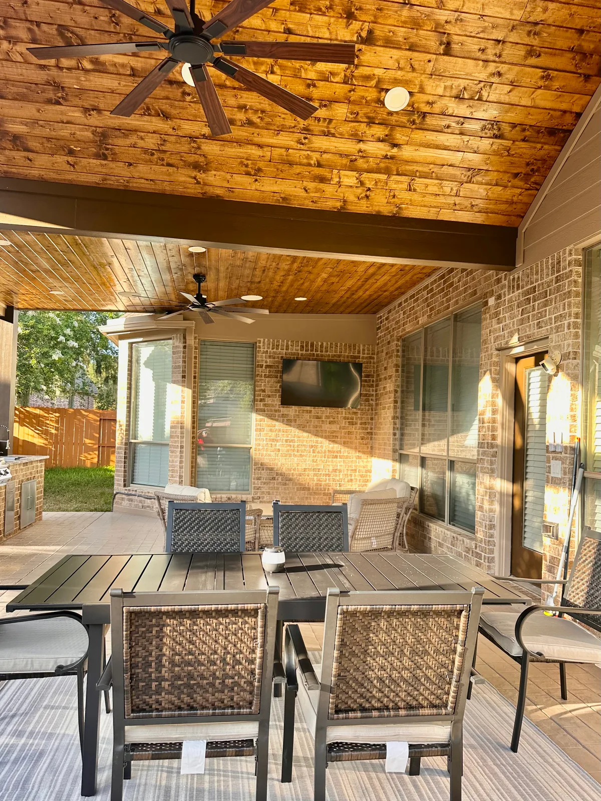
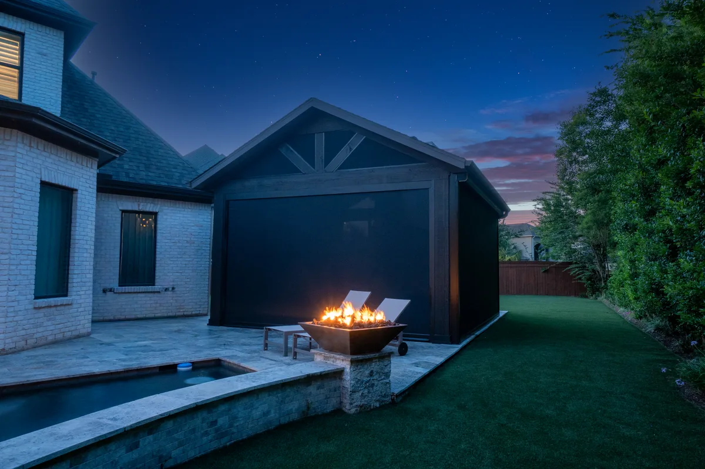
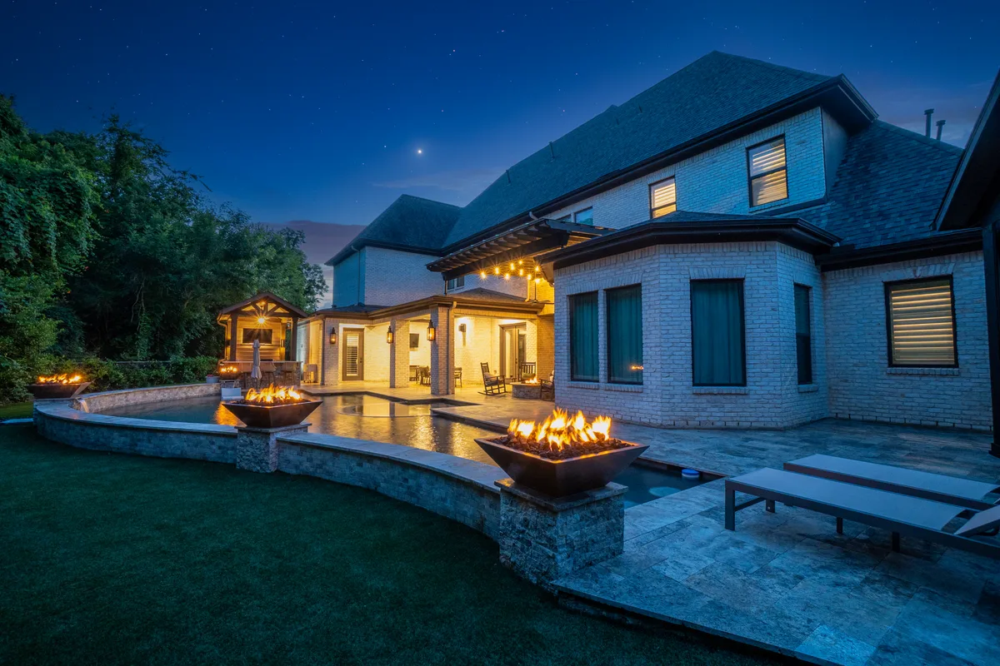
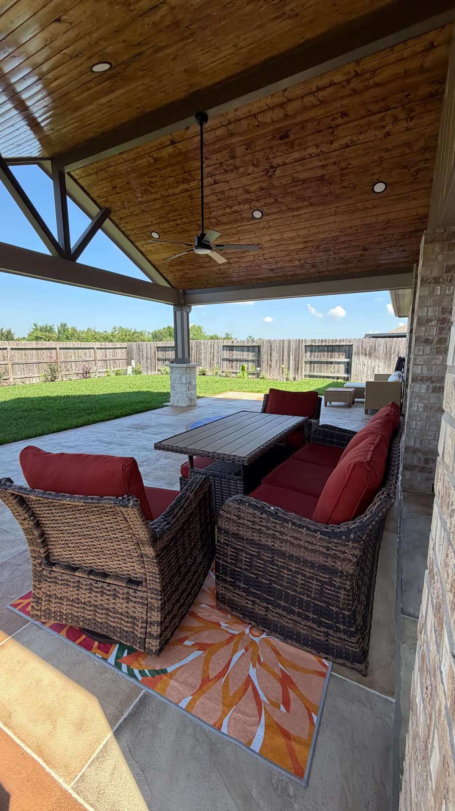

Relax in Comfort, Rain or Shine.
Custom Patio Covers in Houston, TX
- Solid, Lattice & Aluminum Options
- Permit-Ready Process
- Free Design Visit
Houston's Trusted Patio Cover Contractor
Houston summers are hot and unpredictable. A custom patio cover provides shade, protection from the elements, and a more comfortable outdoor living space for relaxing, entertaining, and spending more time outside with family and friends.
At Longhorn Hardscape & Construction, we design and build custom patio covers, covered patios, and insulated roof extensions for homeowners throughout Greater Houston, Missouri City, Sugar Land, Katy, and Pearland. Whether you're looking for a cedar patio cover, aluminum patio cover, insulated patio cover, lattice patio cover, or a hybrid custom design, every structure is engineered for Texas weather, professionally permitted, and built with exceptional craftsmanship.
From your initial consultation through final installation, our team is committed to delivering an outdoor living space that complements your home, enhances your property's value, and provides lasting beauty, durability, and functionality for years to come.

Patio Covers Options We Build in Houston
Solid Roof Covers
Fully insulated, solid-roof extensions that block sun and rain completely — ideal for outdoor kitchens and living rooms.
Lattice Covers
Open lattice designs that filter sunlight and add beauty to your patio without a full enclosed feel.
Aluminum Patio Covers
Low-maintenance aluminum structures that resist rust and UV — perfect for Houston's humid climate.
Wood Patio Covers
Cedar and treated wood covers that add warmth and natural character to your outdoor space.
Attached Covers
Patio covers attached directly to your home's roofline — seamless extension of your indoor living space.
Freestanding Covers
Independent pergola-style covers positioned anywhere in your yard — no attachment to your home required.
Why Choose Longhorn for Your Houston Patio Covers
Built to Beat the Houston Heat
Insulated roof panels cut radiant heat gain so your outdoor space stays comfortable even when it's 98°F and humid outside.
We Handle Every Permit
Attached patio covers require city permits in most Houston-area municipalities. We pull every permit, schedule inspections, and manage the paperwork — you don't touch it.
Right Material for Your Home
Cedar, aluminum, or insulated panels — we spec based on your home's architecture, HOA rules, and how much maintenance you actually want to do.
Installed in Days, Not Months
We give you a firm start date and show up on it. Timeline is confirmed after your project analysis.
Patio Covers Areas We Serve
We serve Greater Houston and surrounding Fort Bend County communities.
Patio Covers FAQs — Houston
Most patio covers attached to the home require a building permit in Houston and surrounding cities. Freestanding structures under a certain size may be exempt. Permit requirements depend on your specific project — we'll advise you during your free consultation.
Aluminum is the most popular choice for Houston due to its rust resistance and low maintenance. Wood offers a natural look but requires periodic sealing. We'll recommend the best option for your specific needs and budget.
Timeline depends on the size, complexity, and permit requirements of your specific project. After a full site review we provide a clear schedule before work begins.
Yes. We offer a wide range of colors, finishes, and trim options to match your home's existing siding, trim, and roof style.
Patio Cover Projects in Houston, TX
A sample of our recent patio cover installations across Greater Houston.






Ready for a Free Patio Covers Estimate?
Tell us your space and your vision — we'll bring a design, material samples, and a fixed price to your door.